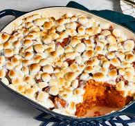

Candied Yams

Description
This candied yams recipe is a simple and quick way to enjoy a
Thanksgiving favorite! Canned yams or sweet potatoes may be
used.
Ingredients
- 1 (29 ounce) can sweet potatoes, drained
- ¼ cup butter, cut into pieces
- 1/2 cup brown sugar
- 1 1/2 cups miniature marshmallow
Steps
-
Drain the syrup: This is a key move so your candied yams don't
turn out runny due to too much liquid in the baking dish.
Place the drained yams into a medium baking dish.
-
Dice the butter: Cut the cold butter into small pieces and
distribute them evenly over the yams.
-
Sprinkle the brown sugar: Measure the brown sugar by packing
it firmly into the measuring cup. Then transfer it to a bowl
to break it up and make it easier to sprinkle.
-
Cover with mini marshmallows: This is where you might use more
than the amount of marshmallows called for in the recipe,
depending on how much surface area you're covering
-
Bake: Because the yams are fully cooked already, what you're
really doing is heating them up and toasting the marshmallows
until they're golden and melty